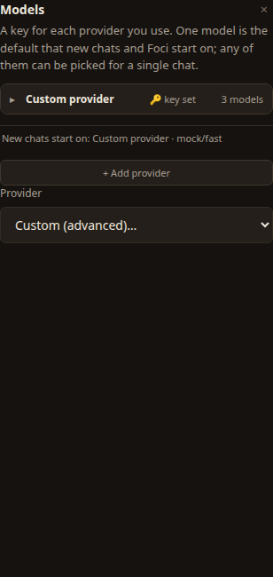
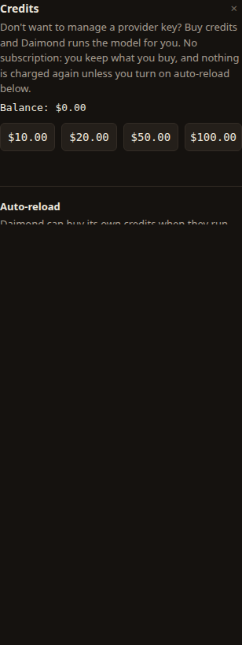

Models & credits
A daimon thinks with a model. You can bring your own provider key and pay that provider directly, or buy credits and let Daimond run a model for you. This page covers both, and how to keep credits topped up.
Two ways to power a daimon
Bring your own key
Connect an account you already hold with a model provider. Your messages go straight to that provider; Daimond is not in the path, and nothing is charged by us.
Buy credits
No provider account to manage. Daimond runs the model for you and draws down the credits you bought. No subscription: you keep what you buy.
Either is enough to start. You can do both — connect a key for everyday work and keep credits for when you would rather not manage one.
Connecting a provider
Open the Models row in the admin panel, bottom-left. It lists a key for each provider you use and shows which model new chats start on. To add one, choose + Add provider and answer the same three questions, whoever the provider is.

-
Choose a provider
Pick from the list — Fireworks AI, OpenRouter, Together AI, Groq, DeepInfra, or Custom for any other service that speaks the same chat-completions API. Choosing Custom reveals a Base URL box to point Daimond at that service.
-
Paste your API key
Paste the key from your provider account into the API key box. It is stored on this device only, wrapped under your passphrase, and sent only to the provider you chose.
-
Star a default model
Choose a Default model from the list (or type a model id for a custom provider). This is the one model new chats and Foci start on. Then choose Save & start.
The default model, and picking another for one chat
One model is the default that new chats and Foci begin on. Any connected model can be chosen for a single chat: open a chat and use the model selector in its header (top-right of the centre panel) to switch just that conversation, without changing the default.
Buying credits
Open the Credits row in the admin panel. It shows your balance and a set of packs to buy. There is no subscription: you keep what you buy, and nothing is charged again unless you turn on auto-reload.

Payment is handled on the payment provider's own hosted page. No card number, expiry or security code is ever typed into Daimond, so there is nothing here to leak.
Auto-reload
Auto-reload is a standing instruction to buy your own credits when they run low, so a long job does not stop halfway. It is the one place Daimond is allowed to charge a saved card while you are away, so it is deliberately explicit. Three numbers set it, found below the packs in the Credits view:
- Below — the balance at which a top-up fires.
- Buy — how much one top-up adds.
- Never more than — a hard cap on total top-ups in a calendar month. This is the number that matters: it is a ceiling, not a target, and it is enforced on the same code path as the charge, so it cannot be walked around.